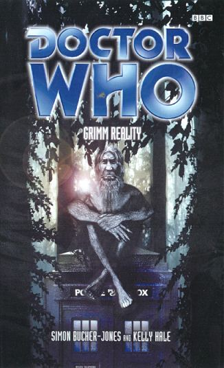

|
Grimm Reality
|
BASIC PLOT DOCTOR COMPANIONS MATERIALISATION CIRCUIT PREPARATORY READING CONTINUITY REFERENCES Pg 71 "I know a bank where the wild thyme grows" Probably not an Iris reference. Pg 86 "I remember [...]white shapes in an orange-yellow sky" The Doctor remembers seeing a meteor shower with his father in the Telemovie. Pg 92 "He'd taken a life-saving course during his years as a corporate troubleshooter in the mid-eighties" Father Time. Pg 97 "Occasionally in the last hundred years or so, I've been taken this way" The Doctor's illness foreshadows The Adventuress of Henrietta Street. "He might be one of those creepy psycho-strategists" We met one in Corpse Marker. Pg 108 "We are not going to wake the crukking giant." The swearword "cruk" appeared a lot in the New Adventures. Hey, it was the nineties, we were into that sort of thing. Pg 112 "'Do you know "Colonel Bogey"?' And before Alex could stop him, he began to whistle." The fourth Doctor also whistles "Colonel Bogey" in The Talons of Weng-Chiang. "There's a song about one in a windmill that Miranda liked." Father Time. Pg 134 "I think I threatened a man with his pet rat once." This might be a reference to The Visitation. Pg 135 "Creepy things silverfish. I once had a phobia about them, but Freud wouldn't tell me what I'd said under hypnosis." Silverfish are almost certainly the Cybermats. The Doctor meets Freud in a story in Missing Pieces. "We charted it as WHO one" Just like Bessie's numberplate during the third Doctor's era. Pg 139 The Doctor uses Venusian Aikido, as the third Doctor did quite a bit. Pg 146 "On my father's side I am immortal, barring accidents" The Telemovie and The War Games. "This was certainly less stressful than the dentistry he'd been forced to do last night" We'll be charitable and assume that he's learned since claiming he didn't know any in Return of the Living Dad. Pg 190 "A crowd of people in what looked like Renaissance clothing. In this world's clothing. A memory he'd had before." In the flashforward in Father Time. Pg 192 "The planet's called Albert?" The Doctor also had a foreshadowing of this line in Father Time. Pg 196 "She'd seen him ride on Hitchemus." The Year of Intelligent Tigers. Pgs 213-214 "Should I have let the Kulan conquer Earth?" Escape Velocity. Pg 227 "Half the worlds in the Kursaal system." Kursaal. But see Continuity Cock-Ups Pg 229 "Anji just knew he was the sort who'd give a car a pet name. Probably a girl's." The Doctor does indeed call his car Bessie. Pg 247 "So you wouldn't want your memories, then, Doctor?" All sorts of Earth arc stuff on this page. "You won't catch me with that old temptation." The City of the Dead. OLD FRIENDS AND OLD ENEMIES NEW FRIENDS AND NEW ENEMIES Christina Morgenstern, although she's a cat by the story's end. Alex Volpe, although he's a fox by the story's end.
CONTINUITY COCK-UPS PLUGGING THE HOLES [Fan-wank theorizing of how to fix continuity cock-ups] FEATURED ALIEN RACES Pg 19 The Abanak, hippopotomus-like aliens. All manner of fairytale dwarves, goblins, giants etc. The planet Albert. FEATURED LOCATIONS Pg 8 Esmerelda's Dream. Pg 9 The Bonaventure. IN SUMMARY - Robert Smith? |
|
 |